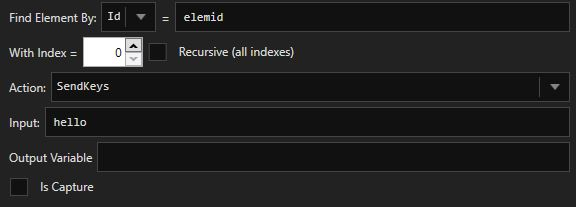

About this guide
This guide will cover how to use Stacker, the OpenBullet Config editor, all the block types available for Config creation the inner workings of a bot when it executes a Config.
Getting started
First of all, you need to navigate to the Config Manager tab inside OpenBullet and create a Config, or edit an existing one. This will open up Stacker and allow access to the Other Options tab, which are Config-specific settings.
Stacker
Stacker's interface is divided in 3 areas: the Stack, the Block Info and the Debugger.

The default view is the Blocks view, but it can be switched to the LoliScript view with the corresponding button. Any change made with one view will reflect in the other view, so you can switch from one to the other without losing data.
LoliScript
LoliScript is a custom scripting language made to expand the Block functionalities of OpenBullet. It's the format in which Configs are actually saved inside the file, and its documentation can be accessed with the Documentation button while in LoliScript view.

In the LoliScript editor, there are automatic tooltips that will show the syntax of a block after you type its name. You can use Ctrl+S to save the Config.
When switching to the Blocks view, LoliScript code that can't be translated into blocks will be displayed in a readonly block.
Bot Behaviour
A Bot (like the Debugger Bot or a Runner Bot) is a worker that contains some data and executes the Config's script until a stop condition is met.
The Bot's Data includes the input data that will be tested against the website, the proxy in use (if any), the status, a log and a list of variables.
The Bot's Status can be:
- NONE - if it's the end status, it will mark the hit as ToCheck
- ERROR - prints the exception info in the log and then behaves like BAN
- SUCCESS - if it's the end status, it will mark the hit as Success
- FAIL - marks the input data as invalid
- BAN - bans the proxy and retries the input data
- RETRY - retries the input data
- CUSTOM - marks the input data as custom
The Bot starts with the NONE Status and executes the script, line by line, from top to bottom, as long as the status is NONE or SUCCESS. If the Status changes to any other value, the Bot will end the script execution and return a result.
Variables
Variables can be defined via blocks or LoliScript instructions, and can be of 3 types: Single, List and Dictionary. Their value can be replaced inside Blocks fields at runtime by using a special syntax that references to their unique name.
Single variables hold a single string value. Their value can be accessed with the syntax <SINGLE> where in this case SINGLE is the variable's name.
List variables hold a list of string values. Their values can be accessed with the syntax <LIST[i]> where 'i' is the index of the element inside the list that you want to retrieve. If you want to target all items (in Blocks that support it) use the syntax <LIST[*]>.
Dictionary variables hold a list of string value pairs. Their values can be accessed by key with the syntax <DICT(key)> (use <DICT(*)> to get all the values) and their keys can be accessed by value with the syntax <DICT{value}> (use <DICT{*}> to get all the keys).
Variables also need be marked for Capture if you want them to be saved inside a hit.
Variables can be hidden and not be normally editable by the user nor displayed, like in the case of HEADERS, COOKIES, SOURCE etc.
In order to exploit all the potential that variables offer, take a look at the Utility Block and to LoliScript commands like SET and DELETE.

There are some hidden variables that are automatically set and cannot be overwritten normally (you can do it with the SET command in LoliScript). These variables are not displayed in the debugger Data tab and they are listed below, along with their type:
- ADDRESS (Single): the URL of the last HTTP response or the URL displayed in the browser's current page.
- RESPONSECODE (Single): the response code of the last HTTP response.
- SOURCE (Single): the response source of the last HTTP response (the data after the headers, encoded in ASCII) or of the current page in the browser.
- COOKIES (Dictionary): the name and value of all cookies saved during HTTP communications (both sent and received).
- HEADERS (Dictionary): the name and value of the headers of the last HTTP response.
Note that variables can also be nested (maximum once) for example <LIST[<COUNTER>]>. This is useful for example in a while loop.
Blocks
Blocks are visual representations of some LoliScript directives. They are also the actual classes that are built and processed at runtime.
There are buttons to add, remove, disable/enable, clone, move one or more blocks and save the config. Click on a block to display its info in the dedicated area. To select multiple blocks at once, hold down the Ctrl button and click on the blocks you want to select.
If a block is disabled it will skipped when the Config runs. Blocks can be copied and pasted by using the Ctrl+C and Ctrl+V shortcuts.
The label of a block will help you understand which block does what, and it's also essential when using the JUMP directive in LoliScript.
When you add a block, a menu with all the available blocks will be displayed. The blocks in the bottom part are meant to be used in Configs that work with selenium.

Request Block
The Request block allows you to perform requests and work with the response from the server.

The POST Data, which is the content sent in the request body below the headers, can be broken into multiple lines by using the linebreak character \n.
When the response source is not important, you can untick 'Read Response Source' and the SOURCE variable will not be set, saving CPU time. When we expect a file response from the server (e.g. when downloading a zip file), the file will be saved to the File Path defined in the block.
For multipart content requests, there is a syntax that needs to be followed, hover on the textbox in order to see it.
Both Custom Cookies and Custom Headers must be defined with the syntax Name: Value.
Cookies sent/received will be stored inside a cookie jar and sent on every following request. The cookies value can be updated but the cookies cannot be deleted unless you use the ClearCookies function inside the Function Block or the DELETE command in LoliScript.
The response will be parsed and divided into chunks and inserted into variables.
- The response headers will be inserted inside the dictionary variable HEADERS
- The response cookies will be inserted inside the dictionary variable COOKIES (the previous cookies will not be deleted)
- The response code will be inserted inside the single variable RESPONSECODE
- The response source will be inserted inside the single variable SOURCE
- The response address (after the redirects) will be inserted inside the variable ADDRESS
When a request fails, the bot status will be changed to ERROR.
Utility Block
The Utility block allows you to work with variables or files and to convert values.

KeyCheck Block
The KeyCheck block allows to modify the Status of the Bot by verifying sets of keys.

The block will first check the Global Ban Keys defined in the proxy settings. The Ban on 4xx option is used to change the Bot's status to BAN in case the last response had a response code of the 4th category (e.g. unauthorized, forbidden, not found). The Ban if no key found option will change the Bot's status to BAN if no KeyChain was triggered; if it's disabled, it will keep the previous Bot status.
A KeyCheck block is made of KeyChains. KeyChains are checked in order, from top to bottom, and the checks don't stop as soon as one of them is triggered so the bottom one can override the ones above it. This is why you should pay attention to the order of KeyChains.
KeyChains can be checked in OR or AND mode. The OR mode will make the KeyChain trigger if any of the keys is triggered. The AND mode will make the KeyChain trigger if all of the keys are triggered.
Particular attention goes to the Exists condition, as it will trigger the key if and only if any variable replacement was successfully performed in the textbox left to it. This is very useful to check if a variable was set or not by another block.
Parse Block
The Parse block allows you to parse data from a page with many different parsing methods and store it into a Single or List variable.

The supported parsing algorithms are LR, CSS, JSON and REGEX.
- LR (Left and Right strings) allows to parse text between two strings
- CSS (CSS Selector) allows to get an element's attribute from an HTML page
- JSON (JavaScript Object Notation) allows to get the value of a JSON-serialized object
- REGEX (REGular EXpression) is an advanced parsing method. You need to use grouping. Learn more about it here
If you tick recursive, all the instances that meet the parsing criteria will be put inside a List variable; otherwise only the first match will be taken and put into a Single variable.
The parsed string (or list of strings) will then be inserted into a variable with the name chosen in the textbox and, if 'is capture' is ticked, it will be marked for Capture.
Function Block
The Function block provides a lot of functions for working with variables of Single or List type.

This block also accepts as input list variables with a jolly index (e.g. <LIST[*]>) which means that the function will be executed on each element of the List variable.
The output string (or list of strings) will then be inserted into a variable with the name chosen in the textbox and, if 'is capture' is ticked, it will be marked for Capture.
ReCaptcha Block
The ReCaptcha block allows to solve a reCaptcha challenge through captcha solving services.

The url represents the url of the page where the captcha appears, while the sitekey can be found inside the page source or set automatically with the corresponding button.
The solved challenge will be inserted in a Single variable with the given variable name.
Captcha Block
The Captcha block allows to solve an image captcha challenge through captcha solving services.

The url represents the link to download the captcha image. If the page shows the captcha as a base64-encoded image in its source you can use that value and tick the corresponding box.
You can also use a selenium screenshot in case you need to solve a captcha when using selenium (first you need to screenshot the correct element using the Element Action block).
The solved challenge will be inserted in a Single variable with the given variable name.
BypassCF Block
The BypassCF Block allows to solve a Cloudflare challenge and bypass the anti-ddos page. If you have a 2captcha api key and it detects that the Cloudflare challenge needs to be solved with a reCaptcha, it will use your account to solve it. 2captcha is the only supported solver.

The url is the url of the Cloudflare-protected page. The user-agent is also essential for solving the challenge.
TCP Block
The TCP block allows to communicate with a server without being forced to use the HTTP protocol.

The server's response will be stored inside the variable with the given variable name.
Remember to disconnect from the host before the Bot terminates or it will waste resources.
Navigate Block
The Navigate block will navigate to a page with the opened selenium browser.

You can set a timeout for the page load, which is very useful when using slow proxies.
BrowserAction Block
The BrowserAction bock lets you interact with the selenium browser itself.
Notes:
- The SendKeys action can accept the inputs <ENTER>, <TAB> <BACKSPACE> and <ESC>. If you want to chain these with themselves or other text
(very useful to compile a form quickly) you can separate them with || for example
<TAB>||Hello World!||<TAB>||<ENTER>

ElementAction Block
The ElementAction block lets you interact with elements on the page inside the selenium browser.
The element can be targeted thanks to one of the available locators: id, class, name, tag, selector and xpath.
ExecuteJS Block
The ExecuteJS block lets you execute JavaScript code inside the selenium browser.

Variable replacement will be performed inside the script's text before running it, so you can use the normal variable syntax.
The Debugger
The Debugger lets you test your Config before running it with an actual Wordlist. You can set a test data (along with the corresponding type that is required for slicing the data and setting up the correct variables) and a test proxy (even with auth or chain) that can be enabled with the checkbox to the left of the proxy type selector.

Step-by-step (SBS) mode will let you execute one line at a time when running the LoliScript code.
The Debugger offers 3 tabs: Data, Log and HTML View.
The Data tab shows information about the Bot's Data such as the Status and the non-hidden Variables.
The Log tab shows information printed by each block or LoliScript command, along with some timing information and errors. You can also easily perform searches inside the log, or clear it with rightclick > Clear.
The HTML View tab shows the content of the SOURCE hidden variable inside a (very old) browser to help visualize if the request bot landed on the correct page of the website.